S&M Repair LLC Website Evaluation
This is a website evaluation for S&M Repair LLC. The goal of this evaluation is to determine how effective the website is in meeting the needs of the target audience. We interviewed three target users to see if they were satisfied with the website. Our process and results have been documented within this website. Feel free to browse our findings! -Heather Johnson & Ernest Joshua.
RECOMMENDATIONS
What are some recommendations based on your findings on your tests, do they match up with your Heuristics? What are some major points that users got stuck on, what did they do well, think of if you gave this to the company, would they act and have data.
Download PDF Recommendations
 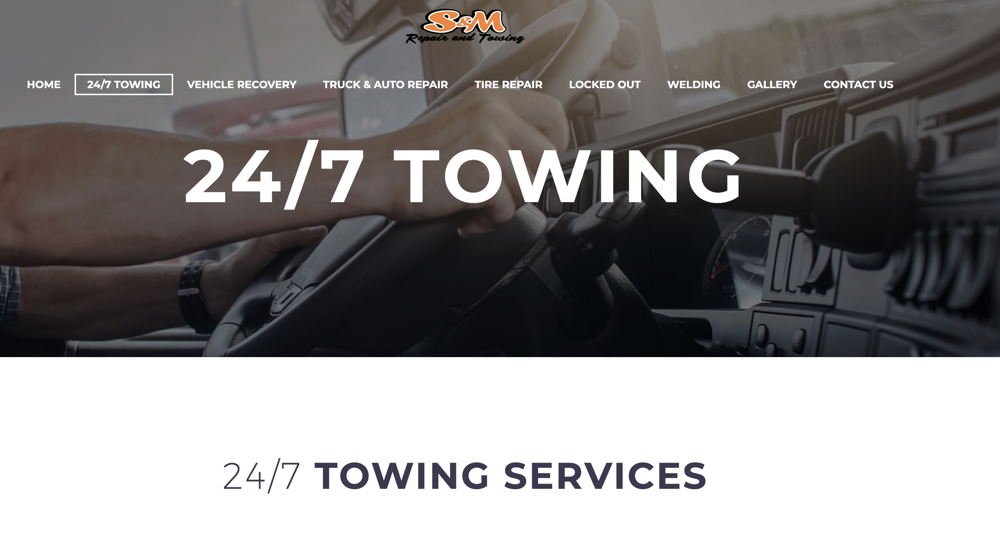
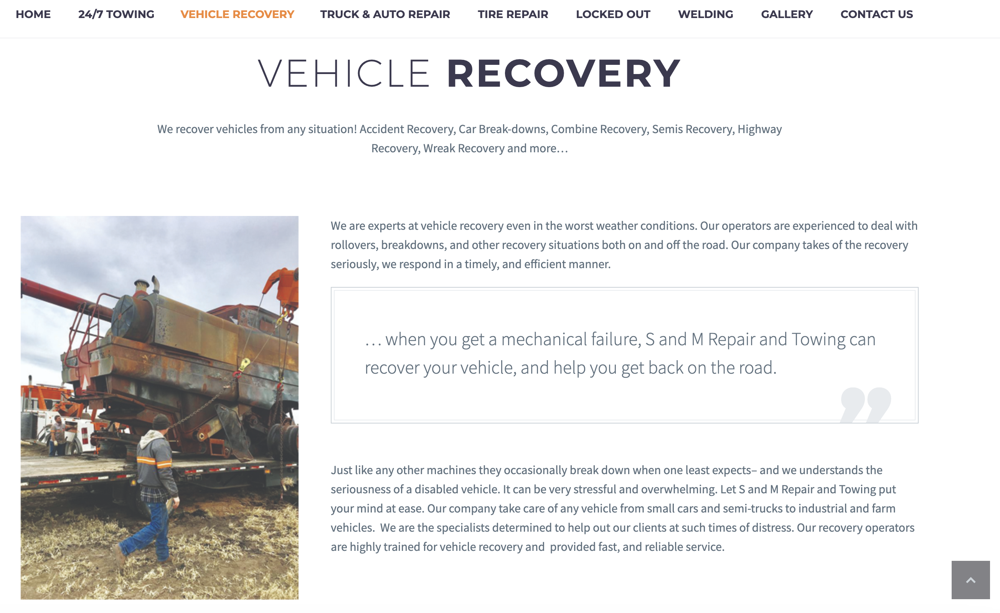
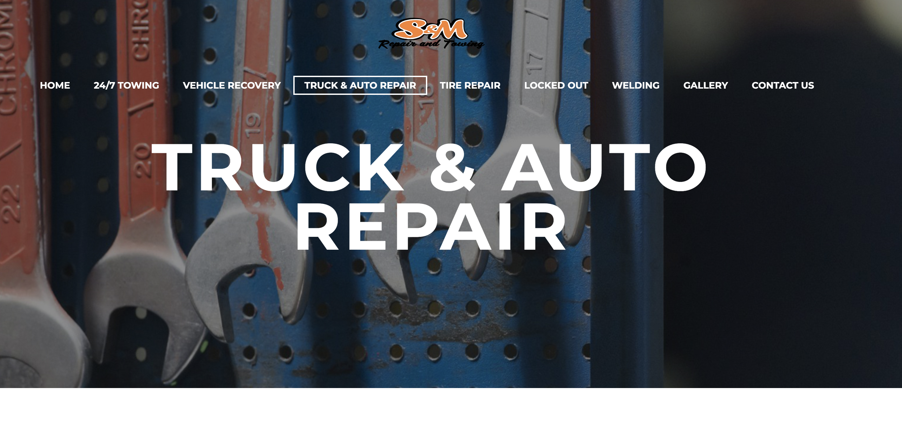
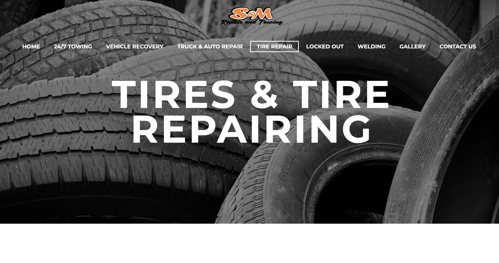
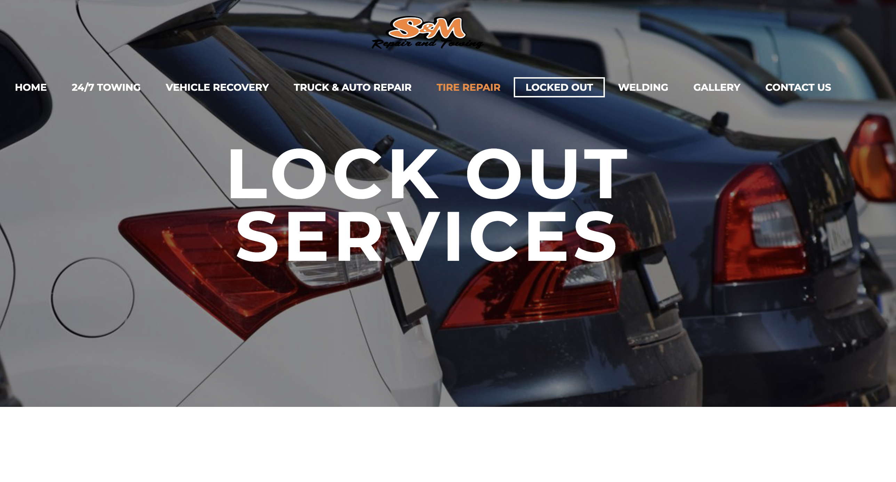
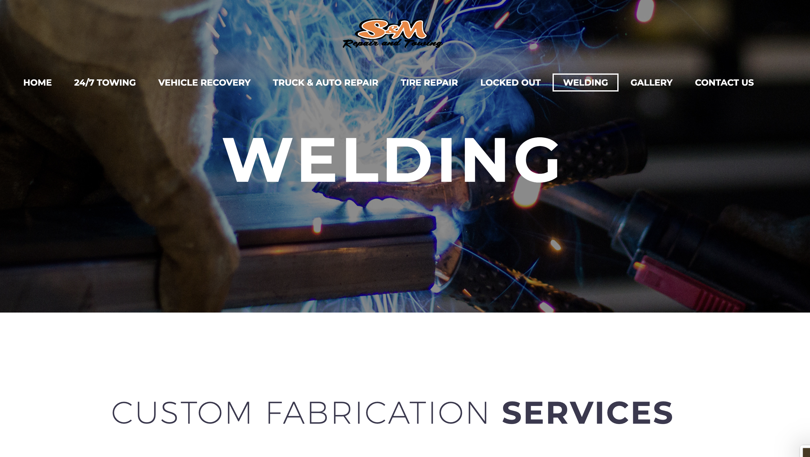
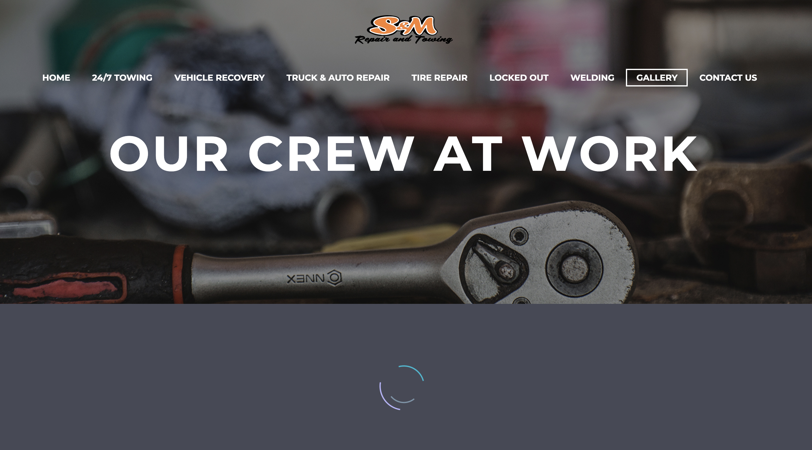
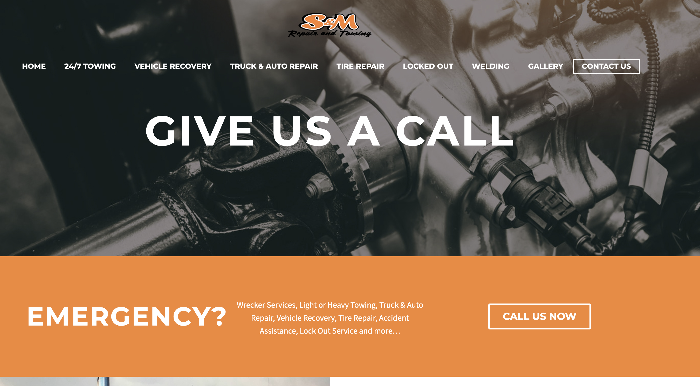
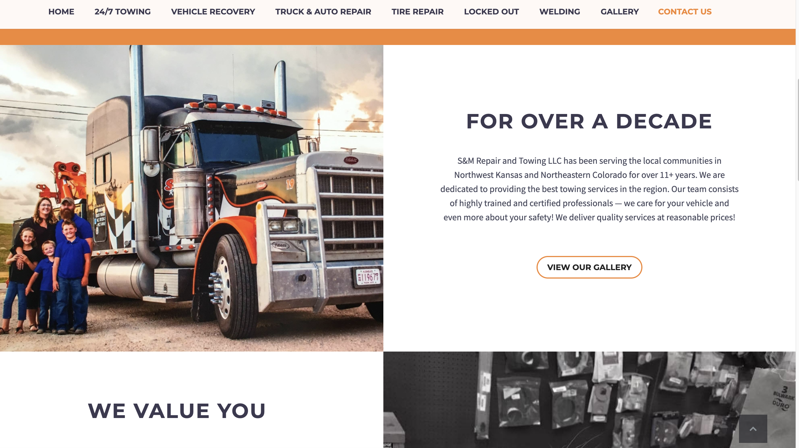
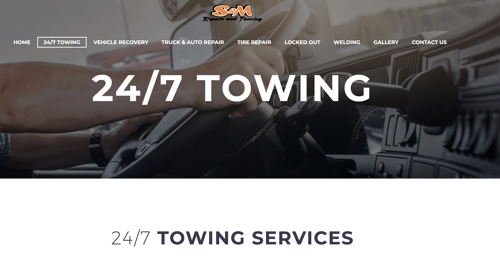
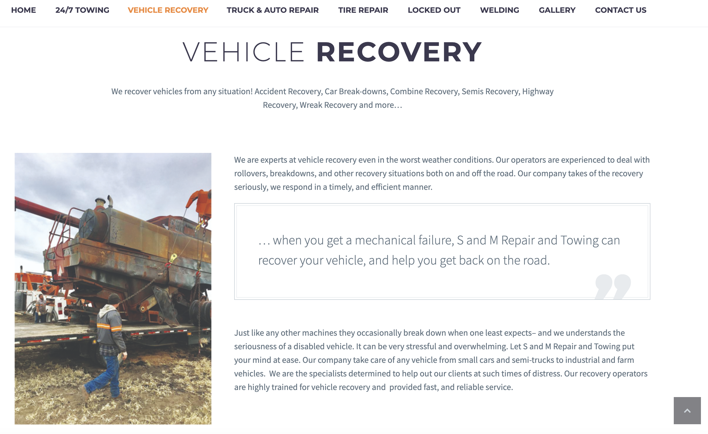
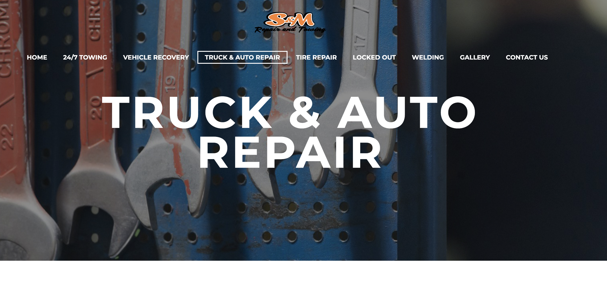
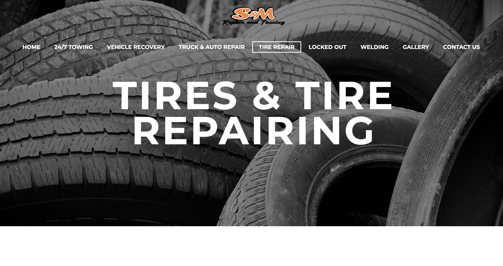
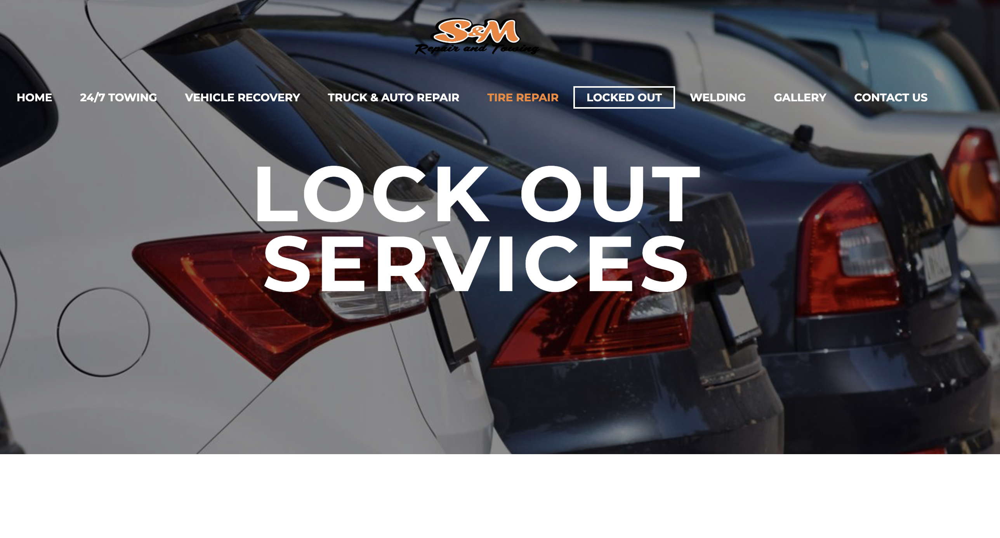
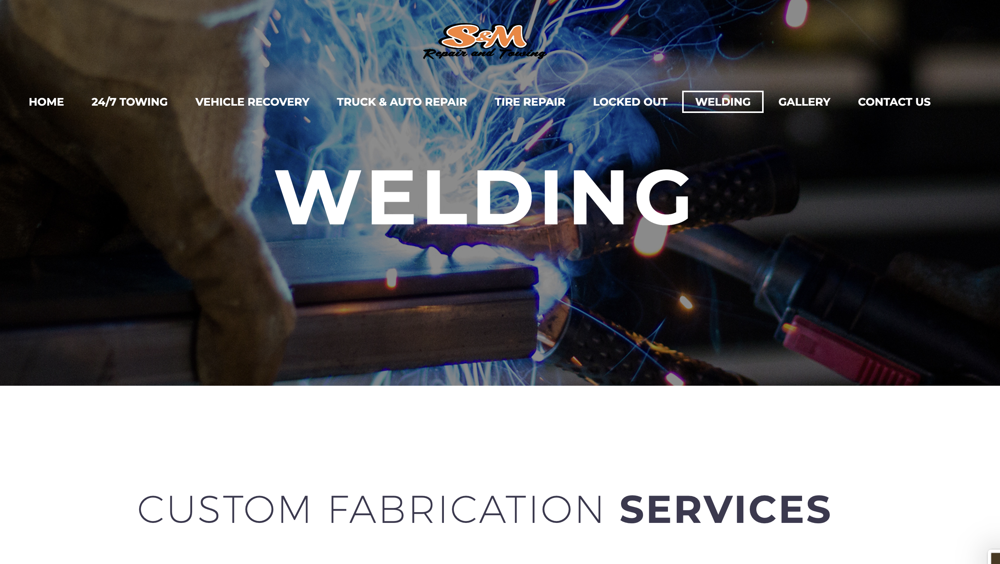
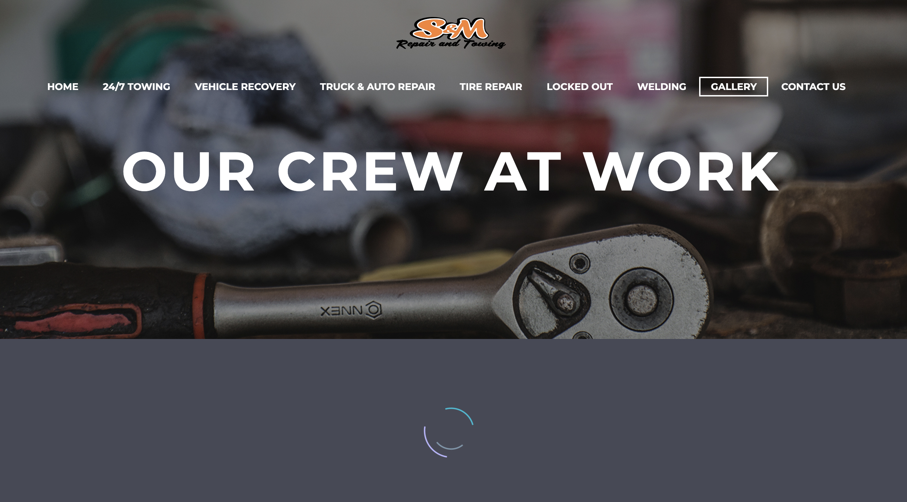
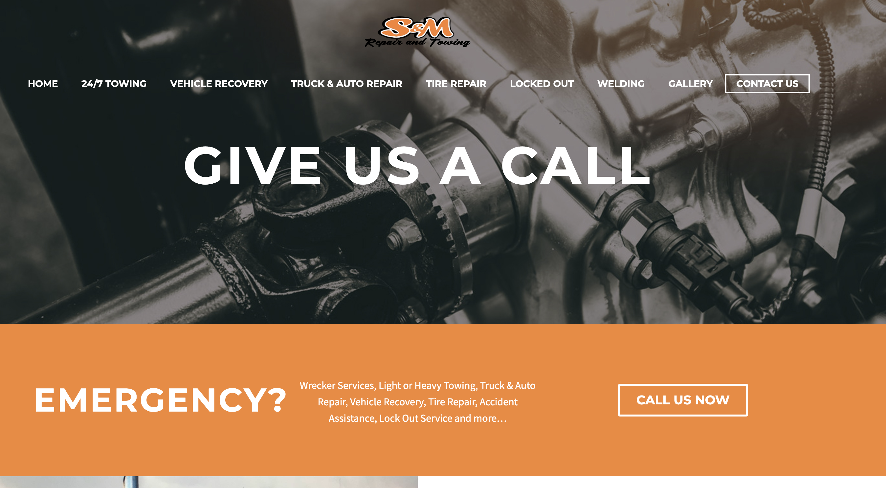
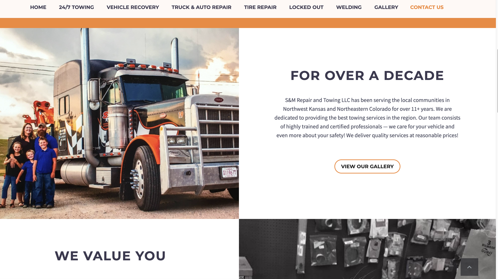